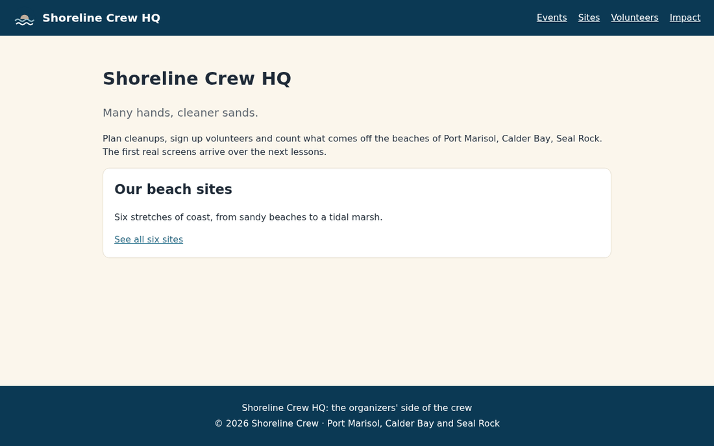

Session 5: Props, Children and Composition
How to teach Lesson 3.2: props as a component's options object, typed with an interface and checked at every use; optional props with defaults; children and composition; parts of the API's types in props. Two demos read every kind of prop error the lesson shows, a lab practices typed props, children and composition on the real sites, and the room builds the HQ's first data-driven screen together: the Beach sites page.
How to Use This Guide
- Session 5 teaches ONE lesson, 3.2, in the usual rhythm: frame (the goal and one mental model) → live demo (you type, they follow) → guided lab (a kit lab: new practice on the lesson's ideas, never the lesson's own project) → the lesson's own project, which gets most of the second half because it builds the first data-driven screen. The lesson's exercises, quiz and journal are homework, except Exercise 2, which you read together.
- Type, do not paste. Every command below was run to produce the output printed under it, in a learner's terminal (Node 24, TypeScript 7.0, oxlint 1.93) on a copy of the app exactly as a learner has it at the end of Lesson 3.2 (the Scratch snippets) or at its start (Step 1). Where the lesson shows the same command, the kit's output is the lesson's, word for word; on learners' machines only times, thread counts and hashes differ. Ask for a prediction before every run.
- The lesson is the reference: keep
lesson_08.htmlopen for the diagrams, the ReactNode declaration and the design table. Labs live inlabs/module-05/(learners already copied the kit'slabs/folder intoshoreline/): thestarter/folder andTASKS.mdare handouts;solution/is yours until the session is over. - Teal blocks are hands-on, amber blocks are watch-outs. The lesson code (3.2) matches the course site. Part 1 runs Sessions 1 to 9; nothing here depends on a later part.
Step 2 pastes the API's answer for GET /api/sites into src/data/sites.ts. It is the first time learners turn real JSON into typed data, and it goes wrong in ordinary ways: the API is not running (nothing to copy), the browser's JSON viewer adds a "Pretty-print" label to the copy, Firefox shows a viewer instead of text (Raw Data, then Copy), the export const sites: Site[] = line is pasted after the JSON instead of before it, or the import of Site is missing. Ten minutes of that and Steps 3 to 7 never happen in the room. Before: check that the API runs on the projector machine and that the picture URLs load. In the room: do Step 2 together, slowly, and show the copy on the projector in Chrome AND say the Firefox route aloud. Anyone still stuck after two minutes copies src/data/sites.ts from lesson-08-end (course downloads) and keeps going: the typing practice is in Steps 3 to 6, not in the paste. After: the "beach" check (Step 2's last paragraph) is the proof the paste worked: TS2322 against the API's own Terrain.
Before the Session
- ☐ Code learners start from: their own
shoreline-hqafter Lesson 3.1 (the HQ shell: Header, Footer, AppLayout, HomePage). Anyone whose 3.1 project is unfinished unzipslesson-08-start.zipfrom the course downloads into a fresh folder, copies.env.exampleto.env.localinshoreline-hqand runsnpm install. Bring both zips (lesson-08-start,lesson-08-end) on a USB stick. - ☐ Files to hand out: the kit's
labs/module-05/folder withoutsolution/(one lab, three tasks). It needsnpm installonce in itsstarter/(React, Vitest, Testing Library; the same packages for every React lab in the kit, so the npm cache helps after the first one). No API needed for the lab. - ☐ Run the kit check once:
python3 labs/check_labs.py module-05from this kit's folder (4 runs, under 10 seconds once installed): the starter fails four tests and its type check as shipped, the solution passes both. - ☐ Projector machine: VS Code on the course folder at a large font, two terminals ("api" running
node server.tsinshoreline-api, "hq" inshoreline-hqrunningnpm run dev), a third fornpx tsc -b; the browser on http://localhost:5173 and http://localhost:4000/api/sites, DevTools docked. Yourshoreline-hqat the START of Lesson 3.2 (stage after 3.1;lesson-08-startis exactly that), with an emptysrc/Scratch.tsxready for the demos. - ☐ Board, before learners arrive: the meeting-point picture (organizer → teams: props go down, never back); the three prop errors in a table (TS2741 missing · TS2322 does not exist · TS2322 expected type comes from); the sites page tree from the lesson (App → AppLayout → SitesPage → SiteCard → Card, SitePicture, Badge).
- ☐ Print or share: the workbook pages for Session 5, sticky notes for help flags and the exit ticket. Hand back Checkpoint 1 (Session 4) at the warm-up.
| Symptom | Cause | Fix |
|---|---|---|
| Site pictures are broken images | The API is not running (the pictures are served by it) | Terminal 1: node server.ts in shoreline-api. The lesson's Before the Next Lesson asks learners to see this on purpose. |
Cannot find name 'Site' in sites.ts | The import type { Site } from '../api/types.ts' line was not pasted | Add the two header lines from the lesson first, then the JSON. |
Hundreds of errors in sites.ts | Something other than JSON came along (a "Pretty-print" label, Firefox's viewer text) | Delete everything after = and copy again (Firefox: Raw Data, Copy). |
Property 'children' is missing in type '{}' in App.tsx | Step 1 is half done: AppLayout takes children, App still writes <AppLayout /> | Expected: Step 1's second half puts <HomePage /> between the tags. |
'children' is declared but its value is never read | AppLayout destructures children and never draws {children} | Put {children} inside <main>. |
| The sites page shows the home page | App's temporary path === '/sites' switch is missing, or the address is not /sites | Step 6's App.tsx; click Sites in the header (a full page load). |
npm run lint warns react(jsx-key) | The key was left out of sites.map(...) | <SiteCard key={site.id} site={site} /> (Lesson 3.3 explains keys). |
Type '"warning"' is not assignable to type '"info" | "success" | undefined' | A tone Badge does not have | Use one of the two, or grow the union AND the CSS together. |
Session 5 Agenda (3 hours)
| Clock | Minutes | Segment | What happens |
|---|---|---|---|
| 0:00 | 10 | Warm-up: Lesson 3.1, retrieved | Three questions on Session 4 (what a component returns, braces in TSX, purity), answered on paper, then out loud; Checkpoint 1 handed back. |
| 0:10 | 10 | 3.2 Frame and mental model | The meeting point: the parent hands each team its kit; props travel down and are never repainted. |
| 0:20 | 25 | 3.2 Live demo: typing props | SiteName and its three errors, Site['image'] and Pick, optional props with defaults (TS18048), the read-only rule (react(immutability)). |
| 0:45 | 20 | 3.2 Guided lab: Tasks 1 and 2 | labs/module-05/l3_2-props-children-and-composition/starter: a Tag with a typed tone and a default, then a Panel that takes children. |
| 1:05 | 15 | 3.2 Live demo: children and composition | Panel and Note, ReactNode, composition over configuration, the design table. |
| 1:20 | 10 | Break | Learners start both servers (the API serves today's pictures) and open lesson-08-start if their 3.1 project is not finished. |
| 1:30 | 40 | 3.2 Start the lesson project: Steps 1 to 5 | Together: AppLayout's children, the pasted sites typed Site[] (and "beach"), Card, Badge, SitePicture and SiteCard. |
| 2:10 | 15 | 3.2 Project Steps 6 and 7 | SitesPage and App's temporary page switch, the page at phone size and in dark mode, two breaks, lint and build. |
| 2:25 | 25 | 3.2 Guided lab Task 3 and Exercise 2 | SiteTile composed from Panel and Tag; then the lesson's featured-site errors read together on the projector. |
| 2:50 | 10 | Wrap-up | Exit ticket (3 questions), homework, bring list for Session 6. |
| Total | 180 | Ends at 3:00. |
In the room. The lesson page estimates 150 minutes for a learner working alone; the room has 160 after the warm-up, the break and the wrap-up, and spends them where the lesson is hardest alone: reading prop errors (two demos), designing props (the lab and the design table) and the first screen made from data (Steps 1 to 7 together). The lesson's Exercise 1, Exercise 3 (stretch), quiz and journal go home; Exercise 2 is read together because it is the session's best error-reading practice.
Goes home (about 2 to 3 hours). Whatever is left of the project (most learners finish Step 7 in the room; the checklist and the "your own project" sketch go home); the lesson's Exercise 1 (ContactLine with Pick) and, for anyone who wants more, Exercise 3 (a Callout); Lab 3.2's stretch; the Quick Quiz and the journal; the workbook's predict-then-check page; the "Before the Next Lesson" list, including stopping the API once and looking at /sites.
Protect, in this order: the three-errors step (the lesson's core skill), Project Steps 1 to 6 (Session 6 builds the events page on this code), the guided lab's Task 2 (children). Cut first: the read-only step (it is one lint message), then Exercise 2 together (it goes home with its solution), then the lab's Task 3 (home).
Opening Segment
Warm-up: Lesson 3.1, Retrieved
10 min| 6m | Three retrieval questions on paper, no notes, then answers out loud |
| 4m | Checkpoint 1 handed back: one sentence on the common slip, where to review it |
- What may a component return? Name three kinds of value. Answer: TSX elements, strings and numbers, arrays of them, and
null/false/undefined(which draw nothing): Lesson 3.1's "what can React draw?", which today becomes theReactNodetype. - In TSX, when do you need braces around an attribute value? Answer: for anything that is not a plain string: numbers, booleans, variables, expressions, objects (
capacity={18},className={cls}). Today: every prop that is not a string. npx tsc -bis silent on this component, so why doesnpm run lintcomplain? Answer: it reads the clock while drawing, so the same inputs could give different output: oxlint'sreact(purity)(real output below). Props today follow the same rule: same props, same TSX.
export function Greeting() { const today = new Date().toLocaleDateString('en-US') return <p>Hello, crew. Today is {today}.</p> }
⚠ react(purity): Cannot call impure function during render
╭─[src/Scratch.tsx:2:17]
1 │ export function Greeting() {
2 │ const today = new Date().toLocaleDateString('en-US')
· ─────┬────
· ╰── Cannot call impure function
3 │ return <p>Hello, crew. Today is {today}.</p>
╰────
help: `Date` is an impure function. Calling an impure function can produce unstable results that update unpredictably when the component re-renders
note: React Compiler skipped optimizing this component or hook. Additional guidance: https://react.dev/reference/eslint-plugin-react-hooks/lints/purity
Found 1 warning and 0 errors.
Finished in …ms on 11 files with 116 rules using … threads.- Keep it to ten minutes. The retrieval is for memory, not a re-teach; anyone who missed two of three gets the lesson's Lesson 3.1 summary as homework.
- Checkpoint 1 feedback: one sentence for the room on the most common slip, then individual notes on the papers; questions at the break.
Lesson Plans
Props, Children and Composition
160 min- Explain props as the single object React passes to a component, and destructure it in the parameter list
- Type props with an interface, and read the errors TypeScript gives for missing, misspelled and mistyped props
- Make props optional with ? and give them defaults, the same way you did for options objects in Lesson 2.3
- Accept content between a component's tags with children: ReactNode, and choose composition over a long list of props
- Reuse the API's domain types in props, including a part of a type such as Site['image']
- Build the HQ's sites page from a typed Site[] with Card, Badge, SitePicture and SiteCard, and give AppLayout its children
| 10m | Frame: props are a component's options object; the meeting point |
| 25m | Live demo 1: typing props, three errors, a part of a type, optional with a default, read-only |
| 20m | Guided lab: l3_2-props-children-and-composition/starter, Tasks 1 and 2 |
| 15m | Live demo 2: children, ReactNode, composition over configuration, the braces mistake |
| 55m | Lesson project together: Steps 1 to 7 |
| 25m | Guided lab Task 3, then Exercise 2 read together |
From the lesson: "Every cleanup has a meeting point, where the organizer hands each team its kit: a bag, gloves, a map of their stretch of beach. The team does not go back to the van to get more; it works with what it was handed. Props are that handoff. The parent decides what each child gets, the child uses it and never changes it, and the data always travels the same way: down."
Then the bridge to Module 2, which is what makes this lesson short for people who did the TypeScript sessions: "You already know the shape props take. In Lesson 2.3 you wrote eventLine with an options object, destructured in the parameter list. A component's props are exactly that: one object, destructured, described by an interface." Write function SiteName({ name, town }: SiteNameProps) on the board under the meeting point and draw the arrow from <SiteName name=... town=... /> to it.
Close the frame with the lesson's "Why this matters": on a team, a component's props are the API other developers use from the editor's completions alone. Typed, few and well named.
In src/Scratch.tsx of your Lesson 3.1 code (learners follow in theirs; the lesson deletes the file at the end). The outputs below were captured in a copy of the app at the end of Lesson 3.2 and equal the lesson's cards.
- One object, destructured (4m). "Yesterday's components always drew the same thing. Today they take inputs." Create
src/Scratch.tsxand type the lesson's SiteName and NextCleanup. Runnpx tsc -b: silent. Then show the compiled form from the lesson page (_jsx(SiteName, { name: "Driftwood Cove", town: "Port Marisol" })): "a function, called with an options object, like eventLine in Lesson 2.3".interface SiteNameProps { name: string town: string } function SiteName({ name, town }: SiteNameProps) { return ( <strong> {name}, {town} </strong> ) } export function NextCleanup() { return ( <p> Next cleanup: <SiteName name="Driftwood Cove" town="Port Marisol" /> </p> ) }
- Three wrong uses, three messages (6m). Add the three wrong uses under the right one (the lesson's block). Ask the room to predict the error code for each BEFORE you run it: missing, misspelled, wrong type.
src/Scratch.tsx:18:8 - error TS2741: Property 'town' is missing in type '{ name: string; }' but required in type 'SiteNameProps'. 18 <SiteName name="North Jetty" /> ~~~~~~~~ src/Scratch.tsx:3:3 - 'town' is declared here. 3 town: string ~~~~ src/Scratch.tsx:19:42 - error TS2322: Type '{ name: string; twon: string; }' is not assignable to type 'IntrinsicAttributes & SiteNameProps'. Property 'twon' does not exist on type 'IntrinsicAttributes & SiteNameProps'. 19 <SiteName name="Otter Creek Mouth" twon="Seal Rock" /> ~~~~ src/Scratch.tsx:20:17 - error TS2322: Type 'number' is not assignable to type 'string'. 20 <SiteName name={42} town="Calder Bay" /> ~~~~ src/Scratch.tsx:2:3 - The expected type comes from property 'name' which is declared here on type 'IntrinsicAttributes & SiteNameProps' 2 name: string ~~~~ Found 3 errors in the same file, starting at: src/Scratch.tsx:18Read them the lesson's way: TS2741 names the missing prop and points at the interface; TS2322 "does not exist" namesIntrinsicAttributes & SiteNameProps(React's own props such as key, plus yours); TS2322 "the expected type comes from" points atname: string. Note: no Did you mean fortwon, unlike HTML attributes in 3.1. - A part of a type (4m). Type the lesson's
Site['image']/Site['terrain']snippet, hoverSiteImage(the image object written out), then misspell the property:src/Scratch.tsx:3:23 - error TS2339: Property 'picture' does not exist on type 'Site'. 3 type SiteImage = Site['picture'] ~~~~~~~~~ Found 1 error in src/Scratch.tsx:3"An indexed access type: reading a property, at the type level, in quotes." Mention Pick in one sentence (Exercise 1 uses it). - Optional, with a default (5m). Type the lesson's TideTime board:
label?: string,label = 'Low tide', the boolean shorthandhighlight. Hover label: a plain string. Then take the default away:src/Scratch.tsx:10:8 - error TS18048: 'label' is possibly 'undefined'. 10 {label.toUpperCase()}: {time} ~~~~~ Found 1 error in src/Scratch.tsx:10"Optional means string | undefined inside the component (Lesson 2.2). A default removes the undefined." No= {}after the props: React always passes an object. - Read-only, and who says so (4m). Change the scratch file to the lesson's SiteTitle, which upper-cases
site.namein place.npx tsc -b: silent. Thennpm run lint:⚠ react(immutability): This value cannot be modified ╭─[src/Scratch.tsx:4:3] 3 │ export function SiteTitle({ site }: { site: Site }) { 4 │ site.name = site.name.toUpperCase() · ──┬─ · ╰── value cannot be modified 5 │ return <h2>{site.name}</h2> ╰──── help: Do not mutate component props or hook arguments. If the value should change, update it where it is owned and pass an update callback, or use local state note: React Compiler skipped optimizing this component or hook. Additional guidance: https://react.dev/reference/eslint-plugin-react-hooks/lints/immutability Found 1 warning and 0 errors. Finished in …ms on 17 files with 116 rules using … threads."tsc did not stop it, the linter did. The help line says what to do: work out a new value, or keep changing values in state (Lesson 3.4)." Keep the meeting point picture: the team does not repaint the map it was handed.
- Forgetting the braces around the props (
function SiteName(name: string)). The error appears where the component is USED, which confuses people. Coach: "What does React pass to every component?" (one object). Self-check Q8. - Making every prop optional "to be flexible". Coach with Step 3's Card: "Which mistake should TypeScript catch for you?" A card without a title is one. Self-check Q9 and the lesson's last Common Mistake.
- Passing the whole object where a part is wanted (
<SitePicture image={site} />, Exercise 2's TS2739). Coach: "Read the expected type in the follow-up line: what isSite['image']?"
Folder: learners work in labs/module-05/l3_2-props-children-and-composition/starter/ (task sheet labs/module-05/l3_2-props-children-and-composition/TASKS.md); your reference is labs/module-05/l3_2-props-children-and-composition/solution/. Three components, tested in a simulated browser: Tag (Task 1: typed props, a union tone with a default), Panel (Task 2: children) and SiteTile (Task 3: Site['image'] and composition), on the six real sites saved from GET /api/sites as a typed src/data/sites.ts. npm test runs the tests (Vitest), npm run typecheck runs tsc --noEmit. Needs npm install once in starter/.
- Run it as shipped first (3m). On the projector:
npm install, thennpm test: all four tests fail. Thennpm run typecheck: three errors, two of them in the test file. "The fixes all belong in the components: the test file says what the components must accept."
× Task 1: a tag shows its label in the default tone
× Task 1: a tag can be a warning
× Task 2: a panel draws its title and whatever is inside it
× Task 3: one tile per site, each with its picture, its town and a step-free tag
Test Files 1 failed (1)
Tests 4 failed (4)src/SiteTile.tsx:14:11 - error TS2322: Type '{ title: string; children: string[]; }' is not assignable to type 'IntrinsicAttributes & PanelProps'.
src/lab.test.tsx:21:6 - error TS2322: Type '{ title: string; children: Element[]; }' is not assignable to type 'IntrinsicAttributes & PanelProps'.
src/lab.test.tsx:50:1 - error TS2578: Unused '@ts-expect-error' directive.
Found 3 errors in 2 files.- Task 1 in pairs (8m):
TagPropswithtone?: 'info' | 'warning'and the default. The point to circulate for: the test file's// @ts-expect-errorlines. Whiletoneis any string, tsc reports TS2578 ("Unused '@ts-expect-error' directive"): the test EXPECTStone="danger"to be rejected. That is how you test a type. - Task 2 (6m):
children: ReactNode. Ask pairs to read the TS2322 inlab.test.tsxaloud before they fix it: "which props did TypeScript receive?" (titleandchildren). - Debrief (3m): "Why does Tag take a label and not a site?" (any page can use it). "Why is Panel's children required?" (an empty panel is a mistake worth catching). Task 3 comes back after the project.
- children: ReactNode (5m). Type the lesson's Panel and BeforeYouCome. "Whatever sits between the tags arrives as children." Show the ReactNode union on the lesson page: elements, strings, numbers, arrays of nodes, and the values that draw nothing. Then the Note component that never declared children:
- Content with nowhere to go (3m).
src/Scratch.tsx:11:6 - error TS2322: Type '{ title: string; children: Element; }' is not assignable to type 'IntrinsicAttributes & NoteProps'. Property 'children' does not exist on type 'IntrinsicAttributes & NoteProps'. 11 <Note title="Before you come"> ~~~~ Found 1 error in src/Scratch.tsx:11"Read the first line: the props TypeScript received had a children property. NoteProps has none." Without TypeScript the paragraph would simply vanish. - Composition over configuration (4m). Put the lesson's
EverythingCardProps(eight optional props) next to the SiteCard you are about to build: a Card frame, a SitePicture, Badges and two paragraphs as children. Ask: "what happens when the next page needs a second link?" (a ninth prop, or nothing changes). Close with the design table (domain component takes the domain object; general component takes plain values; part of a type; children for content; unions over booleans; required stays required). - The braces mistake (3m). The lesson's first Common Mistake, typed live:
function SiteName(name: string) { return <strong>{name}</strong> } export function NextCleanup() { return <SiteName name="Driftwood Cove" /> }
src/Scratch.tsx:6:11 - error TS2322: Type '{ name: string; }' is not assignable to type 'string'. 6 return <SiteName name="Driftwood Cove" /> ~~~~~~~~ Found 1 error in src/Scratch.tsx:6"React will pass an object; the function expects a string." Fix:({ name }: { name: string }).
The lesson project builds the HQ's first screen made from data. Do Steps 1 to 7 together (55 minutes): you type on the projector, learners type in their own app, and a helper per table watches for the Step 2 paste. Learners who arrive with an unfinished 3.1 project work in lesson-08-start.
- Step 1: AppLayout holds any page (6m). Replace
AppLayout.tsxwith the lesson's version (children: ReactNode,{children}inside<main>). Save and let the room read the error BEFORE you change App.tsx: "the layout no longer decides the page; its parent does".src/App.tsx:4:11 - error TS2741: Property 'children' is missing in type '{}' but required in type 'AppLayoutProps'. 4 return <AppLayout /> ~~~~~~~~~ src/components/AppLayout.tsx:6:3 - 'children' is declared here. 6 children: ReactNode ~~~~~~~~ Found 1 error in src/App.tsx:4Then App.tsx with<HomePage />between the tags:npx tsc -bis silent again and the home page is back. - Step 2: the sites as typed data (10m). Open http://localhost:4000/api/sites, copy the JSON (Chrome: Ctrl+A or Cmd+A; Firefox: Raw Data, Copy), create
src/data/sites.tswith the lesson's two header lines and paste afterexport const sites: Site[] =. Then the proof: change the first site's terrain tobeach.src/data/sites.ts:10:5 - error TS2322: Type '"beach"' is not assignable to type 'Terrain'. 10 "terrain": "beach", ~~~~~~~~~ src/api/types.ts:44:3 - The expected type comes from property 'terrain' which is declared here on type 'Site' 44 terrain: Terrain ~~~~~~~ Found 1 error in src/data/sites.ts:10"Pasted data gets no special treatment: the follow-up points at the API's own types." Putsandback. - Step 3: Card, and today's styles (10m). Type Card (title + children, both required), then the index.css changes (two brand colors, two role colors with dark values, the card rules) and the home page card. Show the home page:
shoreline-hq/src/components/Card.tsx
import type { ReactNode } from 'react' interface CardProps { title: string children: ReactNode } export function Card({ title, children }: CardProps) { return ( <section className="card"> <h2>{title}</h2> {children} </section> ) }

The same Card on the home page, holding a sentence and a link instead of a site. That is composition: the card supplies the frame, the page supplies what goes in it. - Step 4: Badge with an optional tone (5m). "A union of two words with a default: the template literal can only ever make badge-info or badge-success, the two classes the CSS has."
shoreline-hq/src/components/Badge.tsx
interface BadgeProps { label: string tone?: 'info' | 'success' } export function Badge({ label, tone = 'info' }: BadgeProps) { return <span className={`badge badge-${tone}`}>{label}</span> }
- Step 5: SitePicture and SiteCard (9m). SitePicture takes
image: Site['image']; SiteCard composes Card, SitePicture and three Badges. Point at the alt text that comes from the data and at the step-free badge's two ternaries.shoreline-hq/src/components/SiteCard.tsximport type { Site } from '../api/types.ts' import { Badge } from './Badge.tsx' import { Card } from './Card.tsx' import { SitePicture } from './SitePicture.tsx' interface SiteCardProps { site: Site } export function SiteCard({ site }: SiteCardProps) { return ( <Card title={site.name}> <SitePicture image={site.image} /> <p className="badges"> <Badge label={site.town} /> <Badge label={site.terrain} /> <Badge label={site.accessible ? 'Step-free route' : 'No step-free route'} tone={site.accessible ? 'success' : 'info'} /> </p> <p>{site.description}</p> <p className="muted">Parking: {site.parking}</p> </Card> ) }
- Step 6: SitesPage and App's temporary switch (8m). SitesPage maps the six sites to SiteCards (key in passing; Session 6 is about keys). App reads
window.location.pathnameONCE (until React Router in Lesson 6.1). Click Sites:shoreline-hq/src/App.tsximport { AppLayout } from './components/AppLayout.tsx' import { HomePage } from './pages/HomePage.tsx' import { SitesPage } from './pages/SitesPage.tsx' // Temporary, until React Router arrives in Lesson 6.1: the header's links load the whole // page again, so reading the address once, when the app starts, is enough to pick a page. const path = window.location.pathname export function App() { return <AppLayout>{path === '/sites' ? <SitesPage /> : <HomePage />}</AppLayout> }

Six SiteCards from one typed Site[]. Each card is a Card holding a SitePicture, three Badges and two paragraphs as its children; the green badge is the success tone. - Step 7: check it everywhere, break it, build (7m). Phone width and dark mode (the grid drops to one column), Tab through the page, then the two breaks:
<SitePicture />and the deleted{children}.src/components/SiteCard.tsx:13:8 - error TS2741: Property 'image' is missing in type '{}' but required in type 'SitePictureProps'. Found 1 error in src/components/SiteCard.tsx:13 src/components/AppLayout.tsx:9:29 - error TS6133: 'children' is declared but its value is never read. Found 1 error in src/components/AppLayout.tsx:9Undo both;npx tsc -b,npm run lint(Found 0 warnings and 0 errors) andnpm run build: 28 modules instead of 22. Without the key,npm run lintwarnsreact(jsx-key)(the lesson mentions it in Step 6).
Done in the room = /sites shows six cards with pictures and badges, the home page shows the "Our beach sites" card, and all three checks pass. Goes home: the completion checklist, the "your own project" sketch (a type and a card tree for the learner's own app), deleting src/Scratch.tsx. This is the code Session 6 builds on; the finished version is lesson-08-end in the course downloads.
Task 3 (12m), in pairs: SitePhoto typed Site['image'] and SiteTile composed from Panel and Tag: the same idea as SiteCard, on different pieces, so it shows who understood the project and who copied it. Expected when everything is done (the solution's run):
✓ src/lab.test.tsx (4 tests)
✓ Task 1: a tag shows its label in the default tone
✓ Task 1: a tag can be a warning
✓ Task 2: a panel draws its title and whatever is inside it
✓ Task 3: one tile per site, each with its picture, its town and a step-free tag
Test Files 1 passed (1)
Tests 4 passed (4)Exercise 2 together (13m): put the lesson's featured-site component in src/Scratch.tsx on the projector and run npx tsc -b. Four errors, one per line inside the return; for each, ask "what does that component's props interface say?" before anyone fixes it. The first line of each error:
src/Scratch.tsx:12:6 - error TS2741: Property 'title' is missing in type '{ children: Element[]; }' but required in type 'CardProps'.
src/Scratch.tsx:13:20 - error TS2739: Type 'Site' is missing the following properties from type '{ url: string; alt: string; width: number; height: number; }': url, alt, width, height
src/Scratch.tsx:14:38 - error TS2322: Type '"warning"' is not assignable to type '"info" | "success" | undefined'.
src/Scratch.tsx:15:8 - error TS2322: Type '{ label: string; children: string; }' is not assignable to type 'IntrinsicAttributes & BadgeProps'.
Found 4 errors in the same file, starting at: src/Scratch.tsx:12The fixes (the lesson's solution, which npx tsc -b accepts): a title={site.name}, image={site.image}, no 'warning' tone, and the sentence as a paragraph among the card's own children because Badge takes no children.
Ask these out loud during the demos and the project (cold-call gently, or think-pair-share):
- What does React pass to a component? Answer: one props object with every attribute in it (plus children when there is content between the tags).
- Which error code means a required prop is missing, and which means an unknown prop? Answer: TS2741 missing; TS2322 with "does not exist on type IntrinsicAttributes & ..." unknown.
- What is the type of an optional prop inside the component, and how do you remove the undefined? Answer:
T | undefined; a default in the destructuring. - Why does SitePicture take
Site['image']and notSite? Answer: it needs only the picture; other pages can pass just the image, and when the API's type changes the prop follows.
Workbook self-check, items Q1 to Q12 (learners do them at home; the compact answers are here):
Answers: Q1 C) One object: { name: 'Driftwood Cove', town: 'Port Marisol' }; Q2 A) Decide whether the design needs a new tone: add 'warning' to Badge's union (and a .badge-warning style), or keep 'info'; Q3 error TS2339: Property 'picture' does not exist on type 'Site'. (the property is called image); Q4 D) Give label a default in the destructuring: label = 'Low tide'; Q5 B) { name: 'Hannah Becker', phone: null }; Q6 B) oxlint's react(immutability) warning; tsc says nothing; Q7 The paragraph between the tags arrived as a children prop and NoteProps has none: add children: ReactNode to NoteProps and draw {children}; Q8 C) The parameter is the whole props object: destructure it, ({ name }: { name: string }); Q9 A) label: string and tone?: 'info' | 'success' with a default; Q10 D) npx tsc -b: TS6133, 'children' is declared but its value is never read; Q11 <p>: 06:40</p> (no label); neither tool says a word; Q12 A) To the API's own types (src/api/types.ts): pasted JSON is checked against Site like any other code. Full set with explanations in the Answer Key.
Support: learners new to destructuring get the props object written out on the board once (function SiteName(props: SiteNameProps) { const { name, town } = props }), then the short form. For Step 2, pair them with a confident neighbor and let them copy src/data/sites.ts from lesson-08-end if the paste fails twice: the session's skills are in Steps 3 to 6.
Stretch: Lab 3.2's stretch (a footer?: ReactNode prop on Panel); the lesson's Exercise 3 (a Callout with a tone and children) and the Bonus Challenge (ComponentProps<'section'> with a rest parameter: which props should Card still control?).
Closing
Put the three questions on the slide; learners answer in the workbook's Exit Ticket box or on a sticky note. Sort the notes into "got it" and "not yet" before Session 6: question 2's pile tells you how long Session 6's warm-up spends on children.
- Write the first line of a
Bannercomponent that takes a requiredtitleand an optionaltoneof'info' | 'warning'with the default'info'. Answer:function Banner({ title, tone = 'info' }: BannerProps)withinterface BannerProps { title: string; tone?: 'info' | 'warning' }. - What is
children, and which type do you give it? Answer: the content between a component's opening and closing tags, passed as a prop;ReactNode. - Why does SiteCard take
site: Sitewhile Badge takeslabel: string? Answer: SiteCard is about sites (the domain object is its clearest contract); Badge is general-purpose and must work on any page with plain values.
- Finish the lesson project (Steps 1 to 7 and the completion checklist), and sketch your own app's main type and card tree (the lesson's "your own project" paragraph).
- Lesson exercises: Exercise 1 (ContactLine with Pick and
??); Exercise 2 if it was cut in class; Exercise 3 (a Callout) is a stretch. - The lesson's Quick Quiz (five questions; answers in the Answer Key) and the workbook's self-check Q1 to Q12 and predict-then-check P1 to P3.
- Lab 3.2: Task 3 if not finished, then the stretch.
- Journal: the lesson's prompt (the sites page's tree from memory with each component's props, and why Badge takes a label while SiteCard takes a site).
- Before the Next Lesson (from 3.2): all three checks pass,
src/Scratch.tsxdeleted; visit /sites once with the API stopped (the pictures disappear: Lesson 4.1 handles it).
- Your
shoreline-hqat the end of Lesson 3.2 (the sites page working), the API and the dev server able to start. No time to finish?lesson-09-startin the course downloads is exactly that code. - Session 6 covers two lessons (3.3 Lists and Conditional Rendering, 3.4 State and Events): read the start of Lesson 3.3 if you can. The lab for Session 6 reuses the React lab packages (no new download).
- The workbook, your journal and your own app's sketch.
If You Run Long or Short
- Protect: the three-errors step, Project Steps 1 to 6, the lab's Task 2.
- Cut first (saves 4m): the read-only step in demo 1 (show the lint message on the slide only).
- Cut second (saves 13m): Exercise 2 together: it goes home with the lesson's solution.
- Cut third (saves 12m): the lab's Task 3 goes home; Step 7's phone and dark-mode check becomes homework.
- The lesson's Exercise 3 together (a Callout with a tone and children): Badge's tone pattern plus Card's children pattern in one component.
- The Bonus Challenge live:
interface CardProps extends ComponentProps<'section'>and a rest spread. Ask what happens when a caller passes aclassName. - Predict-then-check P1 to P3 from the workbook on the projector, one at a time.